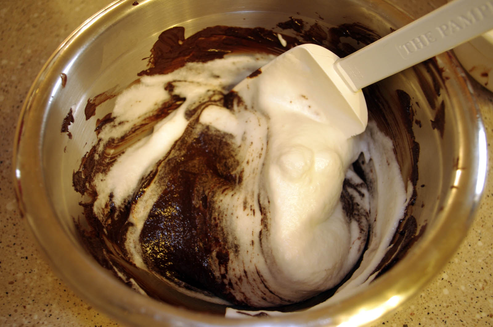

Step 4: In a deep, clean bowl, using a mixer fitted with a clean whisk attachment, beat the egg whites on medium-high speed until foamy, about 1 minute. Gradually add the remaining 3 Tbs. granulated sugar and continue to beat until medium-firm peaks form, about 2 minutes. Scoop half of the egg whites onto the chocolate mixture and fold them in gently. Fold in the remaining whites just until no streaks remain.
